従来結果を残したまま、実績あるCalculiX CrunchiX 2.20で再解析しました。曲げに不利な一次HEX8を避け、二次20節点・低減積分のC3D20Rを使用しています。
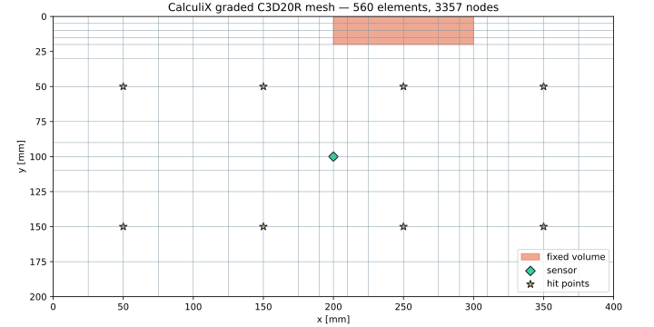
固定領域はY方向5 mm、x=200/300 mm付近は10～15 mm、中央センサ付近は10～15 mm間隔です。板厚方向は1 mm × 2要素です。
応力・曲率変化が比較的小さい外側は25 mmまで広げ、均一格子より少ない560要素で二次要素を使えるようにしました。
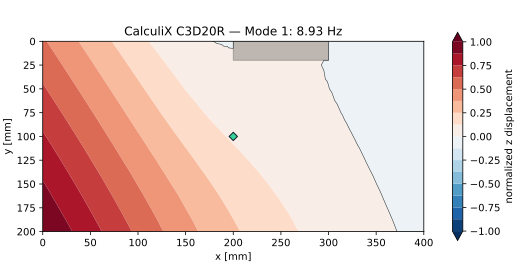
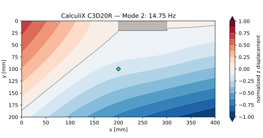
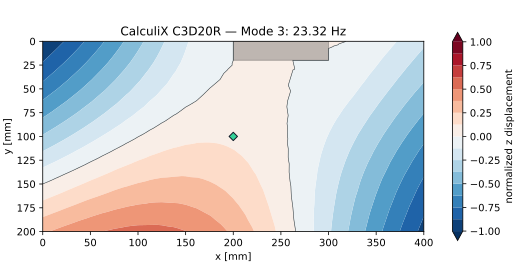
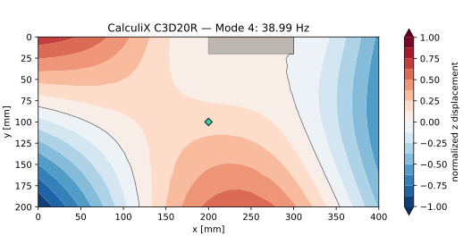
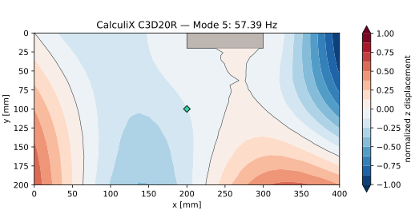
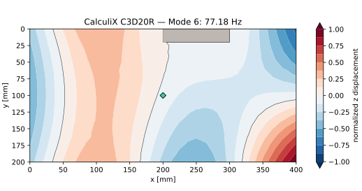
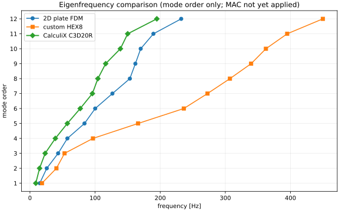
| Mode | CalculiX C3D20R | 2D板モデル / 独自HEX8 |
|---|---|---|
| 1 | 8.93 Hz | 15.04 / 18.36 Hz |
| 2 | 14.75 Hz | 25.81 / 40.64 Hz |
| 3 | 23.32 Hz | 43.26 / 53.15 Hz |
| 4 | 38.99 Hz | 57.48 / 96.75 Hz |
CalculiX結果が低いことは、独自一次HEX8のせん断ロッキングによる過剰剛性の疑いと整合します。ただし実測FRFとメッシュ収束による確認前に確定値とはしません。
各打点へ2サンプル幅の三角形単位力積を与え、CalculiXの*MODAL DYNAMICで中央センサ変位を計算しました。6.4 kHz・2,048点の変位を加速度へ換算し、Hann窓でFFTしています。
CalculiXが出力した30個の質量正規化固有モードを用い、各打点の単位Z方向力積に対する320 msの表面変位を10秒へ引き延ばしています。第1モード（8.93 Hz）の約2.9周期を含みます。8画面は共通振幅スケールです。パース表示の高さは最大変位を±18 mmとして視覚的に強調したもので、実寸変形ではありません。星が打点、菱形が中央センサです。60 msの従来版もファイルとして保持しています。
Hz / 274 modes
KX134-1211のZ軸機械帯域5.6 kHzを覆う25.6 kHz・50 ms応答です。
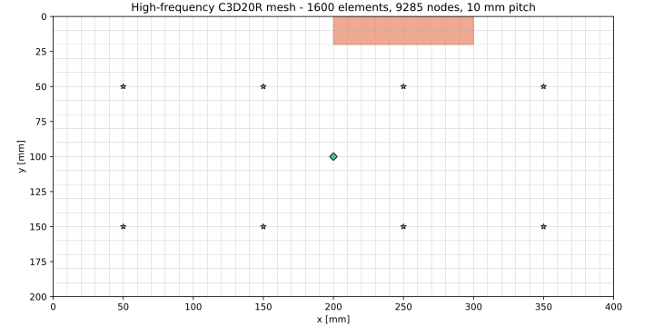
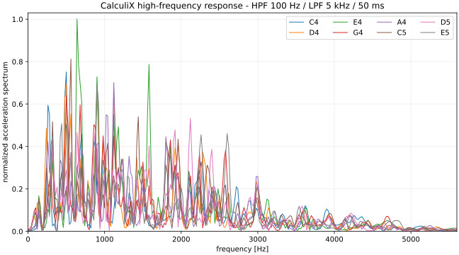
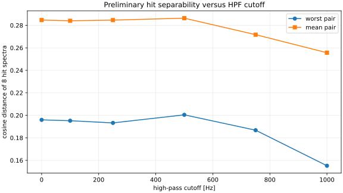
5 kHzのPMMA曲げ波長は概算約36 mmです。10 mmメッシュは予備解析であり、高周波の最終値にはさらに細かいメッシュとの収束比較が必要です。詳細は高周波CalculiX解析仕様を参照してください。
| ソルバー | CalculiX CrunchiX 2.20 | Debian公式パッケージ |
|---|---|---|
| 要素 | C3D20R | 20節点二次六面体・低減積分 |
| 固有値 | *FREQUENCY, STORAGE=YES | SPOOLES + ARPACK、30モード |
| 動解析 | *MODAL DYNAMIC, DIRECT | 6.4 kHz、320 ms、8個の独立ジョブ |
| 減衰 | 直接モード減衰1.2% | Mode 1–30 |
| 質量 | CalculiX整合質量行列 | 独自版の集中質量とは異なる |
| 材料 | E=3.2 GPa、ν=0.35、ρ=1,180 kg/m³ | 等方線形PMMA |
| 固定 | x=200–300、y=0–20、z=-1–1 mm | 349節点のXYZを固定 |
| イメージ | acrylic-pan-calculix:2.20 | 既存Python FEMとは別イメージ |
|---|---|---|
| コンテナ | acrylic-pan-calculix-run | 終了時に削除 |
| ネットワーク | --network none | CVATから分離 |
| 出力 | web/assets/simulation/calculix | 従来結果を上書きしない |
.\run-calculix.ps1入力デッキ、FRD、EIG、DAT、実行ログを含む詳細は CalculiX基準解析仕様 に記録しています。